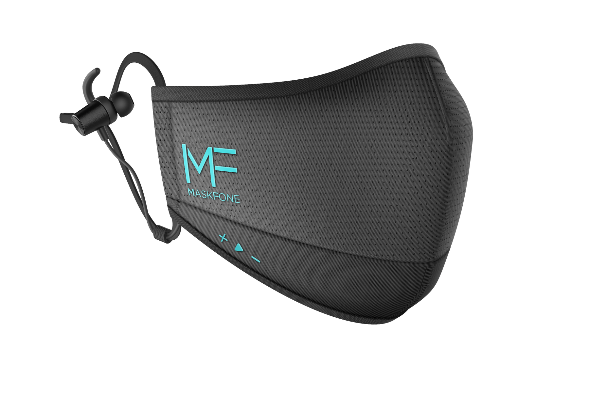
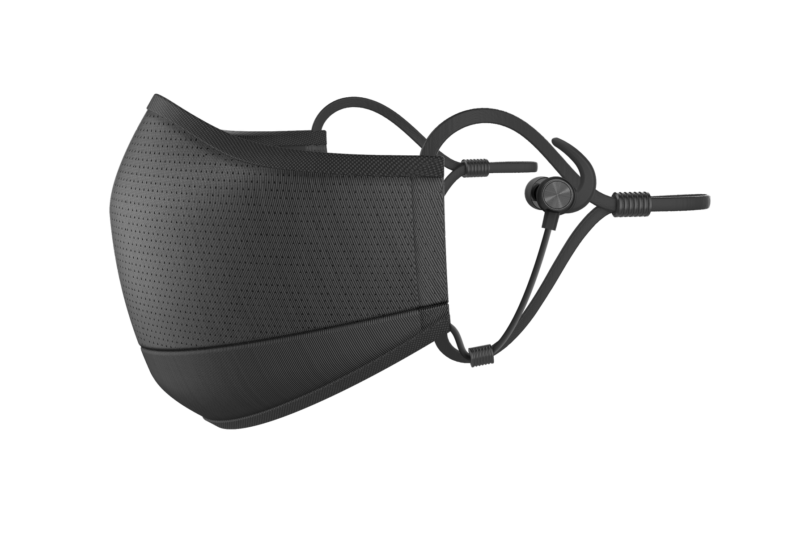
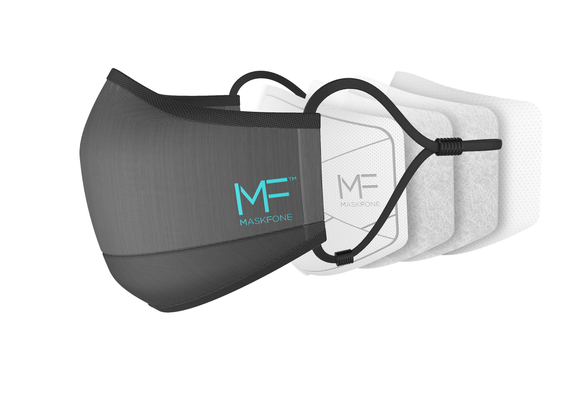

MASKFONE combines protection, convenience, and technology.
It features replaceable PM2.5 and N95/FFP2 filters, a built-in microphone, and earphones, reducing the need to remove mask in public.

MaskFone improves the ongoing issue with being on the phone while wearing a mask. The current solutions involve using either wireless earbuds or wired earbuds. Either sounding muffled and unclear during conversations, or having a wire get tangled with the facemask requiring the user to adjust or remove the face mask.

Fabric
MaskFone uses a soft twill fabric that conforms to the contours of your face. The weave is tight enough to stop large particles but loose enough to allow some airflow. Not only does it make it comfortable to wear, but it also cuts exposure to harmful pathogens.
MaskFone reduces these inconveniences by a built-in audio solution with a facemask so you will no longer have to miss calls or your music in public while wearing a facemask.

N95 filters
The replaceable N95 filters catch 95% of particles. The combination cuts the viral load significantly.
The filters also remove bacteria and pollutant, ensuring the air breathed in will be fresh and pure.

In context visuals


Onboard friendly
Compatible with airline adapter and 3.5mm cable.

Sport version